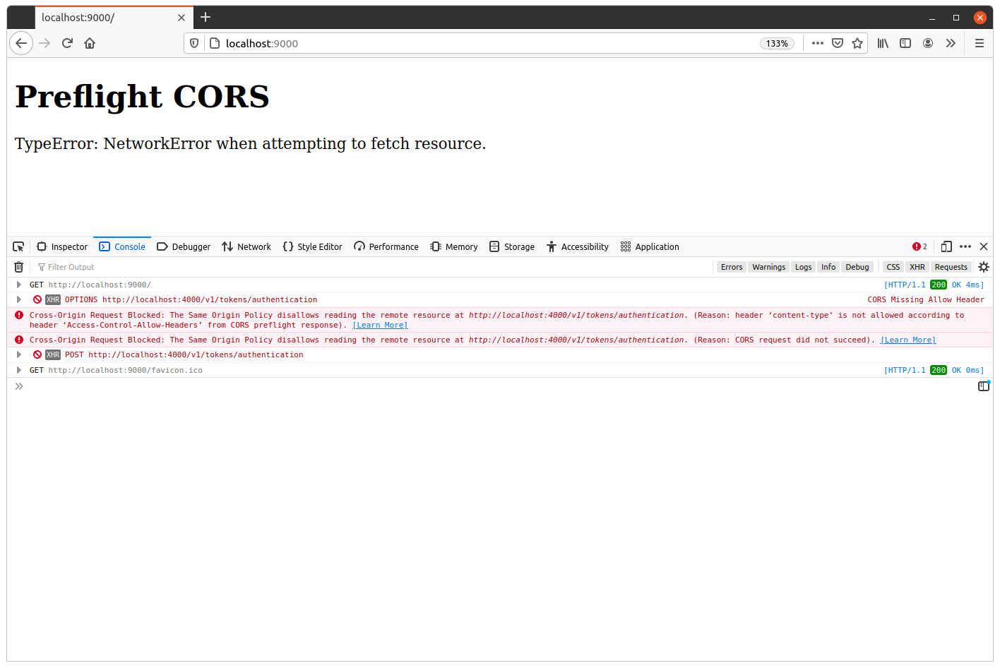
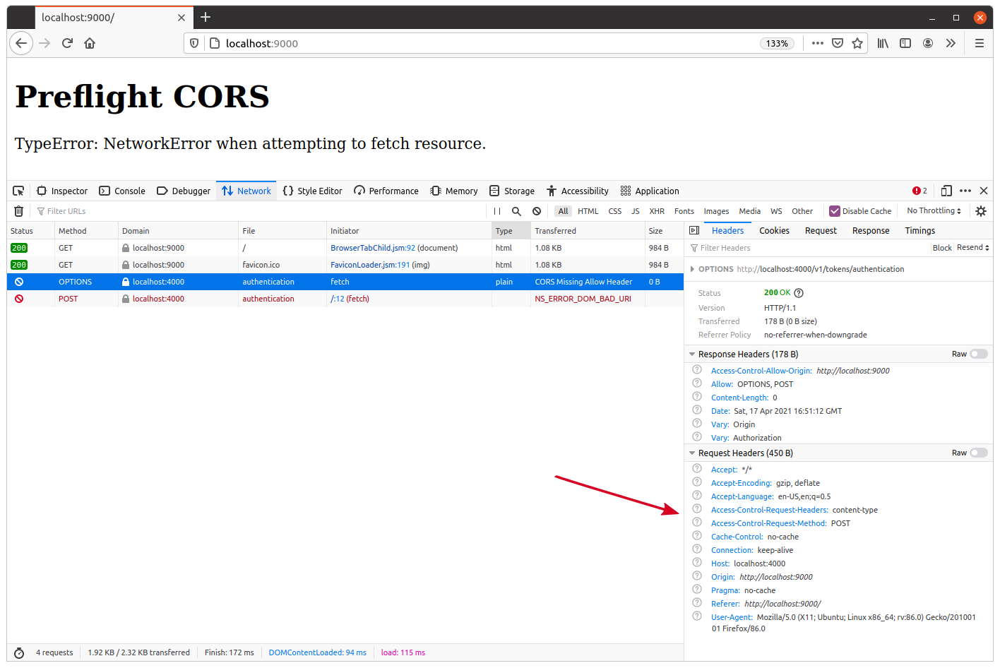
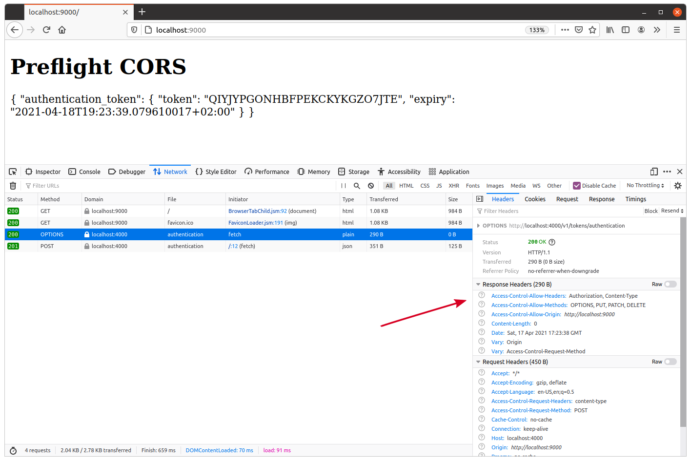

درخواستهای Preflight CORS
درخواست cross-origin که ما در فصل قبل با JavaScript ایجاد کردیم، به عنوان درخواست cross-origin ساده شناخته میشود. به طور کلی، درخواستهای cross-origin زمانی به عنوان «ساده» طبقهبندی میشوند که تمام شرایط زیر برآورده شوند:
- روش HTTP درخواست یکی از سه روش ایمن CORS باشد:
HEAD،GETیاPOST. - هدرهای درخواست همگی هدرهای ممنوعه باشند یا یکی از چهار هدر ایمن CORS:
AcceptAccept-LanguageContent-LanguageContent-Type
- مقدار هدر
Content-Type(در صورت تنظیم) یکی از موارد زیر باشد:application/x-www-form-urlencodedmultipart/form-datatext/plain
وقتی یک درخواست cross-origin این شرایط را برآورده نکند، مرورگر وب یک درخواست اولیه «preflight» قبل از ارسال درخواست واقعی ایجاد میکند. هدف از این درخواست preflight تعیین این است که آیا درخواست cross-origin واقعی مجاز خواهد بود یا خیر.
نمایش یک درخواست preflight
برای نمایش نحوه کار درخواستهای preflight و آنچه باید برای مدیریت آنها انجام دهیم، بیایید یک صفحه وب نمونه دیگر در پوشه cmd/examples/cors/ ایجاد کنیم.
این صفحه وب را طوری تنظیم میکنیم که درخواستی به endpoint POST /v1/tokens/authentication ما ارسال کند. هنگام فراخوانی این endpoint، یک آدرس ایمیل و رمز عبور را در بدنه درخواست JSON به همراه هدر Content-Type: application/json قرار میدهیم. و از آنجا که هدر Content-Type: application/json در درخواست cross-origin «ساده» مجاز نیست، این باید یک درخواست preflight به API ما ایجاد کند.
بیایید یک فایل جدید در cmd/examples/cors/preflight/main.go ایجاد کنیم:
$ mkdir -p cmd/examples/cors/preflight $ touch cmd/examples/cors/preflight/main.go
و کد زیر را اضافه کنید که الگوی بسیار مشابهی با الگویی که چند فصل پیش استفاده کردیم دارد.
package main import ( "flag" "log" "net/http" ) // Define a string constant containing the HTML for the webpage. This consists of a <h1> // header tag, and some JavaScript which calls our POST /v1/tokens/authentication // endpoint and writes the response body inside the <div id="output"></div> tag. const html = ` <!DOCTYPE html> <html lang="en"> <head> <meta charset="UTF-8"> </head> <body> <h1>Preflight CORS</h1> <div id="output"></div> <script> document.addEventListener('DOMContentLoaded', function() { fetch("http://localhost:4000/v1/tokens/authentication", { method: "POST", headers: { 'Content-Type': 'application/json' }, body: JSON.stringify({ email: 'alice@example.com', password: 'pa55word' }) }).then( function (response) { response.text().then(function (text) { document.getElementById("output").innerHTML = text; }); }, function(err) { document.getElementById("output").innerHTML = err; } ); }); </script> </body> </html>` func main() { addr := flag.String("addr", ":9000", "Server address") flag.Parse() log.Printf("starting server on %s", *addr) err := http.ListenAndServe(*addr, http.HandlerFunc(func(w http.ResponseWriter, r *http.Request) { w.Write([]byte(html)) })) log.Fatal(err) }
اگر قصد دارید همراه با ما پیش بروید، این برنامه را اجرا کنید:
$ go run ./cmd/examples/cors/preflight 2021/04/17 18:47:55 starting server on :9000
سپس یک پنجره ترمینال دوم باز کنید و برنامه API معمولی ما را همزمان با http://localhost:9000 به عنوان origin معتبر اجرا کنید:
$ go run ./cmd/api -cors-trusted-origins="http://localhost:9000" time=2023-09-10T10:59:13.722+02:00 level=INFO msg="database connection pool established" time=2023-09-10T10:59:13.722+02:00 level=INFO msg="starting server" addr=:4000 env=development
وقتی هر دو در حال اجرا بودند، مرورگر خود را باز کنید و به http://localhost:9000 بروید. اگر به log کنسول در ابزارهای developer خود نگاه کنید، باید پیامی مشابه این ببینید:
Cross-Origin Request Blocked: The Same Origin Policy disallows reading the remote resource at http://localhost:4000/v1/tokens/authentication. (Reason: header 'content-type' is not allowed according to header 'Access-Control-Allow-Headers' from CORS preflight response).

میبینیم که دو درخواست اینجا به عنوان «مسدود شده» توسط مرورگر علامتگذاری شدهاند:
- یک درخواست
OPTIONS /v1/tokens/authentication(این درخواست preflight است). - یک درخواست
POST /v1/tokens/authentication(این درخواست «واقعی» است).
بیایید نگاه دقیقتری به درخواست preflight در تب network ابزارهای developer بیندازیم:

نکته جالب اینجا هدرهای درخواست preflight است. بسته به مرورگری که استفاده میکنید ممکن است کمی متفاوت به نظر برسند، اما به طور کلی باید چیزی شبیه این باشند:
Accept: */* Accept-Encoding: gzip, deflate Accept-Language: en-US,en;q=0.5 Access-Control-Request-Headers: content-type Access-Control-Request-Method: POST Cache-Control: no-cache Connection: keep-alive Host: localhost:4000 Origin: http://localhost:9000 Pragma: no-cache Referer: http://localhost:9000/ User-Agent: Mozilla/5.0 (X11; Ubuntu; Linux x86_64; rv:86.0) Gecko/20100101 Firefox/86.0
سه هدر اینجا وجود دارد که مربوط به CORS هستند:
Origin— همانطور که قبلاً دیدیم، به API ما اطلاع میدهد که درخواست preflight از کدام origin میآید.Access-Control-Request-Method— به API ما اطلاع میدهد که چه روش HTTP برای درخواست واقعی استفاده خواهد شد (در این مورد، میبینیم که درخواست واقعیPOSTخواهد بود).Access-Control-Request-Headers— به API ما اطلاع میدهد که چه هدرهای HTTP با درخواست واقعی ارسال خواهند شد (در این مورد میبینیم که درخواست واقعی شامل هدرcontent-typeخواهد بود).
توجه به این نکته مهم است که Access-Control-Request-Headers همه هدرهایی را که درخواست واقعی استفاده خواهد کرد فهرست نمیکند. فقط هدرهایی که ایمن CORS نیستند یا ممنوعه هستند فهرست میشوند. اگر چنین هدرهایی وجود نداشته باشد، Access-Control-Request-Headers ممکن است به طور کامل از درخواست preflight حذف شود.
پاسخ به درخواستهای preflight
برای پاسخ به یک درخواست preflight، اولین کاری که باید انجام دهیم این است که تشخیص دهیم آیا این یک درخواست preflight است — نه فقط یک درخواست OPTIONS معمولی (حتی ممکن است cross-origin باشد).
برای این کار، میتوانیم از این واقعیت استفاده کنیم که درخواستهای preflight همیشه سه جزء دارند: روش HTTP OPTIONS، هدر Origin، و هدر Access-Control-Request-Method. اگر هر یک از این اجزا وجود نداشته باشد، میدانیم که این یک درخواست preflight نیست.
وقتی تشخیص دادیم که یک درخواست preflight است، باید پاسخ 200 OK با برخی هدرهای خاص ارسال کنیم تا به مرورگر اطلاع دهیم آیا درخواست واقعی مجاز به ادامه است یا خیر. این هدرها عبارتند از:
- هدر پاسخ
Access-Control-Allow-Originکه مقدار هدرOriginدرخواست reflect میکند (مانند فصل قبل). - هدر
Access-Control-Allow-Methodsکه روشهای HTTP قابل استفاده در درخواستهای cross-origin واقعی به URL را فهرست میکند. - هدر
Access-Control-Allow-Headersکه هدرهای درخواست قابل استفاده در درخواستهای cross-origin واقعی به URL را فهرست میکند.
در مورد ما، میتوانیم هدرهای پاسخ زیر را برای مجاز کردن درخواستهای cross-origin برای تمام endpointهایمان تنظیم کنیم:
Access-Control-Allow-Origin: <reflected trusted origin> Access-Control-Allow-Methods: OPTIONS, PUT, PATCH, DELETE Access-Control-Allow-Headers: Authorization, Content-Type
وقتی مرورگر این هدرها را دریافت میکند، مقادیر آنها را با روش و هدرهایی (بدون حساسیت به حروف بزرگ و کوچک) که میخواهد در درخواست واقعی استفاده کند مقایسه میکند. اگر روش یا هر یک از هدرها مجاز نباشند، مرورگر درخواست واقعی را مسدود خواهد کرد.
بهروزرسانی middleware ما
بیایید این را عملی کنیم و middleware enableCORS() خود را بهروزرسانی کنیم تا هر درخواست preflight را رهگیری و به آنها پاسخ دهد. به طور خاص، میخواهیم:
- هدر
Vary: Access-Control-Request-Methodرا روی تمام پاسخها تنظیم کنیم، زیرا پاسخ بسته به وجود یا عدم وجود این هدر در درخواست متفاوت خواهد بود. - بررسی کنیم که آیا درخواست یک درخواست preflight cross-origin است یا خیر. اگر نیست، باید اجازه دهیم درخواست به طور معمول ادامه یابد.
- در غیر این صورت، اگر یک درخواست preflight cross-origin است، باید هدرهای
Access-Control-Allow-MethodsوAccess-Control-Allow-Headersرا همانطور که در بالا توضیح داده شد اضافه کنیم و پاسخ200 OKارسال کنیم.
فایل cmd/api/middleware.go را به صورت زیر بهروزرسانی کنید:
package main ... func (app *application) enableCORS(next http.Handler) http.Handler { return http.HandlerFunc(func(w http.ResponseWriter, r *http.Request) { w.Header().Add("Vary", "Origin") // Add the "Vary: Access-Control-Request-Method" header. w.Header().Add("Vary", "Access-Control-Request-Method") origin := r.Header.Get("Origin") if origin != "" { for i := range app.config.cors.trustedOrigins { if origin == app.config.cors.trustedOrigins[i] { w.Header().Set("Access-Control-Allow-Origin", origin) // Check if the request has the HTTP method OPTIONS and contains the // "Access-Control-Request-Method" header. If it does, then we treat // it as a preflight request. if r.Method == http.MethodOptions && r.Header.Get("Access-Control-Request-Method") != "" { // Set the necessary preflight response headers, as discussed // previously. w.Header().Set("Access-Control-Allow-Methods", "OPTIONS, PUT, PATCH, DELETE") w.Header().Set("Access-Control-Allow-Headers", "Authorization, Content-Type") // Write the headers along with a 200 OK status and return from // the middleware with no further action. w.WriteHeader(http.StatusOK) return } break } } } next.ServeHTTP(w, r) }) }
چند نکته اضافی اینجا وجود دارد که باید به آنها اشاره کنیم:
وقتی به درخواست preflight پاسخ میدهیم، عمداً وضعیت HTTP
200 OKرا به جای204 No Contentارسال میکنیم — حتی اگر بدنه پاسخی وجود نداشته باشد. این به این دلیل است که نسخههای خاصی از مرورگرها ممکن است پاسخهای204 No Contentرا پشتیبانی نکنند و در نتیجه درخواست واقعی را مسدود کنند.اگر هدر
Authorizationرا در درخواستهای cross-origin مجاز کنید، مانند کد بالا، مهم است که هدر wildcardAccess-Control-Allow-Origin: *را تنظیم نکنید یا هدرOriginرا بدون بررسی در برابر لیستی از originهای معتبر بازتاب ندهید. در غیر این صورت، این کار سرویس شما را در برابر حمله brute-force توزیعشده روی هر اعتبارنامه احراز هویتی که در آن هدر ارسال میشود آسیبپذیر میکند.
خب، بیایید این را امتحان کنیم. API خود را مجدداً راهاندازی کنید و http://localhost:9000 را به عنوان origin معتبر تنظیم کنید:
$ go run ./cmd/api -cors-trusted-origins="http://localhost:9000" time=2023-09-10T10:59:13.722+02:00 level=INFO msg="database connection pool established" time=2023-09-10T10:59:13.722+02:00 level=INFO msg="starting server" addr=:4000 env=development
سپس http://localhost:9000 را دوباره در مرورگر خود باز کنید. این بار باید ببینید که درخواست cross-origin fetch() به POST /v1/tokens/authentication با موفقیت انجام میشود و اکنون یک authentication token در پاسخ دریافت میکنید. چیزی شبیه این:

اطلاعات تکمیلی
کش کردن پاسخهای preflight
در صورت تمایل، میتوانید هدر Access-Control-Max-Age را به پاسخهای preflight خود اضافه کنید. این نشاندهنده تعداد ثانیههایی است که اطلاعات ارائه شده توسط هدرهای Access-Control-Allow-Methods و Access-Control-Allow-Headers توسط مرورگر قابل کش شدن هستند.
به عنوان مثال، برای مجاز کردن کش شدن مقادیر به مدت 60 ثانیه میتوانید هدر زیر را روی پاسخ preflight خود تنظیم کنید:
Access-Control-Max-Age: 60
اگر هدر Access-Control-Max-Age را تنظیم نکنید، نسخههای فعلی Chrome/Chromium و Firefox به طور پیشفرض مقادیر پاسخهای preflight را به مدت 5 ثانیه کش میکنند. نسخههای قدیمیتر یا مرورگرهای دیگر ممکن است مقادیر پیشفرض متفاوتی داشته باشند، یا اصلاً مقادیر را کش نکنند.
تنظیم مدت زمان طولانی Access-Control-Max-Age ممکن است راه جذابی برای کاهش درخواستها به API شما به نظر برسد — و همینطور هم هست! اما باید مراقب باشید. همه مرورگرها راهی برای پاک کردن کش preflight ارائه نمیدهند، بنابراین اگر هدرهای اشتبی برگردانید، کاربر تا زمان منقضی شدن کش با آنها گیر خواهد کرد.
اگر میخواهید کش کردن را به طور کامل غیرفعال کنید، میتوانید مقدار را -1 تنظیم کنید:
Access-Control-Max-Age: -1
همچنین مهم است که بدانید مرورگرها ممکن است حداکثر سختی برای مدت زمان کش شدن هدرها اعمال کنند. مستندات MDN میگوید:
- Firefox این مقدار را به 24 ساعت (86400 ثانیه) محدود میکند.
- Chromium (قبل از نسخه 76) به 10 دقیقه (600 ثانیه) محدود میشود.
- Chromium (از نسخه 76 به بعد) به 2 ساعت (7200 ثانیه) محدود میشود.
ویلدهای preflight
اگر API پیچیده یا در حال تغییر سریعی دارید، ممکن است نگهداری یک لیست ایمن ثابت از روشها و هدرها برای پاسخ preflight دشوار باشد. ممکن است فکر کنید: فقط میخواهم تمام روشها و هدرهای HTTP را برای درخواستهای cross-origin مجاز کنم.
در این مورد، هر دو هدر Access-Control-Allow-Methods و Access-Control-Allow-Headers به شما اجازه استفاده از کاراکتر wildcard * را میدهند:
Access-Control-Allow-Methods: * Access-Control-Allow-Headers: *
اما استفاده از اینها با برخی نکات مهم همراه است:
ویلدها در این هدرها در حال حاضر فقط توسط 95٪ مرورگرها پشتیبانی میشوند. هر مرورگری که از آنها پشتیبانی نکند، درخواست preflight را مسدود خواهد کرد.
هدر
Authorizationقابل ویلد کردن نیست. در عوض، باید آن را به طور صریح در هدر قرار دهید، مانندAccess-Control-Allow-Headers: Authorization, *.ویلدها برای درخواستهای credentialed (درخواستهایی با کوکیها یا احراز هویت basic HTTP) پشتیبانی نمیشوند. برای این درخواستها، کاراکتر
*به عنوان رشته تحت اللفظی"*"در نظر گرفته میشود، نه به عنوان یک wildcard.